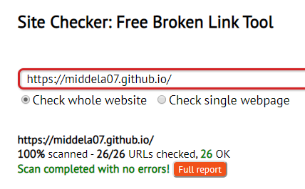

Welcome to our website. On this page, you will find more information on how we made this website, including what graphics, research, and technology software we used to get here. This page also goes through the rubric and guidelines of our chapter, and how we implemented it here. For more information, contact us at nainamiddela@gmail.com and/or nethramiddela@gmail.com. Thank you for visiting!
Website Design Team
Naina Middela (02-1796-0020)
Nethra Middela (02-1796-0021)
Heritage High School
Frisco, Texas
2019-2020
Page Layout
• Visual organization is easily understood
We created a template page and used it as a landing page (home page).
• Aesthetic use of colors and fontsWe have created a css file that standardized the website with consistent colors, images, fonts, and spacing.
• Consistent format page to pageEvery page included on our website will follow the standard format of the template page that we created.
The links are consistent throughout the website and can be accessed by the navigation bar at the top of each page, leading to the needed page.
• Links show consistent formattingWe have formatted the links in our codes by using a "link rel" tag, which specifies the item as a link. We also put links on the pictures of the front page too, to fit with the user’s clicking habits.
• Navigational path is clear and logicalThe paths to navigate each section are easy click links, and we have a navigation bar at the top of our website for easy access.
We made sure each image exemplifies the content; like the picture of the solar panel-fused window is stated in the text, and the image for the Application section for Geothermal Energy matches the examples given in the text. By using css, you can see the image size formatted; like image sizes for an aesthetic look. CSS allows us to change it, so is the “grayscale” effect on the images on the main page which turn to color when you click on them.
• Originality of graphics (stock or original)Throughout our website, we used graphics from Google images, which correspond to each energy source.
• Effective use of innovative technology (Ex: original coding, use of SASS, Python)Technologies Used: HTML, CSS, Sublime Text 3
For the structure, we have created an HTML template to make the format consistent across the website. The color combinations, images, fonts, and other design elements are personalized with CSS. Also, with Bootstrap, we can make our website responsive to the user's device. We have written our code in an editor called Sublime Text 3. By individually designing each page, but using the checkin and checkout of the code from GITHUB-which holds the source code, we could combine our work into one stunning website.
Our research is organized in important categories, like pros, cons, applications, and costs. It gives the reader a necessary amount of basic and easy to read information.
• Portrays the topicWe used three different energy sources, and gave facts about each of them which we thought were most useful for a real life biohome. We also structured the information as if the reader was a buyer of a biohome and wanted information.
• Effectiveness of siteWe believe our site is effective because it organizes information in a creative and aesthetic way, and is easy to navigate and understand without assistance.
Yes, this website is cross-browser compatible, and we have tested it with Google Chrome, Internet Explorer, and Safari.
Yes, we followed all guidelines and ensured our work is organized.
We have checked and rechecked our website, running a spelling tool wherever it was needed.
